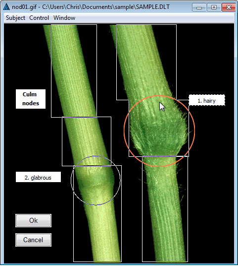
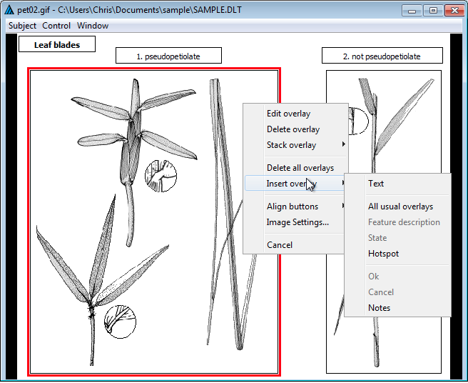
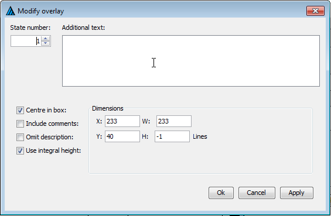
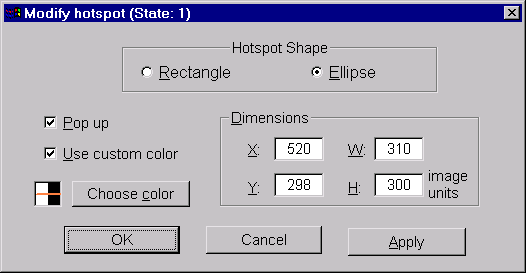

Character and taxon images are displayed in windows that are meant to closely resemble the appearance they have within Intkey. These images may have overlays superimposed upon them. The editor provides facilities for adding, modifying, and deleting these overlays. Here is an example of a character image, as displayed in the editor.

Note that the image window contains its own menu. The 'Subject' menu item allows the user to go to a different image attached to the same taxon or character, based on the subject text of the image. The 'Control' menu provides options for going on to the next or previous image associated with the current taxon or character, or for going on to the next taxon or character. The 'Window' menu provides options for controlling how the image and its overlays are displayed, and for obtaining information about the image.
The image above contains examples of the basic different types of overlays: text boxes (which automatically become scrollable for large amounts of text), push buttons, and 'hotspots'. Overlays are inserted, modified, or deleted by right clicking on the image or an existing overlay. This will cause a popup-menu to appear, as seen below.

The range of overlay types that are available depends upon the type of image being viewed. All image types allow for the creation of 'OK' and 'Cancel' buttons, which can be used in Intkey to close the image window; and for the creation of general-purpose 'text' overlays, which may contain any arbitrary text. Taxon images may also contain a text overlay to contain the name of the taxon, and a 'Notes' button which, when clicked, will cause notes associated with the image to be displayed in a separate window. Similarly, character images may contain a 'feature' text overlay, which displays the feature description of the character; and a 'Notes' button which, when clicked, will cause the character notes associated with the character to be displayed.
Character images may contain several other types of overlay, depending on the character type. Images associated with multistate characters may contain 'state' text overlays, which displays a state number and description. When used in Intkey, these overlays may be selected by the user to indicate the applicability of that state. The 'state' overlays may also have one or more 'hotspots' associated with them - regions of the underlying image that may also be used by an Intkey user to select the associated state. Similarly, images associated with numeric characters may contain selectable 'value' overlays that contain a numeric value (or range of numeric values), and these may also have associated hotspots. Images for numeric characters may, in addition, contain an 'enter' overlay in which an Intkey end-user may enter any value, and a 'units' overlay which displays the character's units of measurement (if they have been defined).
The basic overlays for a character image can be inserted in a single step by selecting the option 'All usual overlays'. This inserts the 'Feature description' box, 'State' boxes (for a multistate character) or 'Enter' and 'Units' boxes (for a numeric character), 'OK' and 'Cancel' buttons, a 'Notes' button (if there are notes for the character), and a hotspot for each character state.
Once they have been created, overlays may be resized or repositioned by use of the mouse (or similar pointing device). Click on a overlay to select it. Its border will become thicker. (The innermost margin of this border corresponds to the border of the 'normal' overlay window.) When the cursor is positioned over this border, it changes to a double-headed arrow, indicating that the overlay window may be re-sized by holding down the left mouse button and moving the mouse. (The 'OK', 'Cancel', and 'Notes' push-buttons are exceptions to this - they may be moved but not resized.) To move the selected overlay window, but retain its size, position the cursor in the middle of the window and hold down the left mouse button. The cursor will change to a 'hand', and moving the cursor will move the window to a new position. An overlay may not be positioned beyond the boundaries of the image window. A 'selected' overlay may be returned to its normal state by 'selecting' another overlay, or by clicking on some portion of the image where there is no overlay.
Double-clicking the left mouse button within a 'selected' overlay will open a dialog box for modification of the properties of the overlay. The dialog may also be opened by right-clicking on the overlay and selecting 'Edit overlay' from the popup menu. A sample of such a dialog for a 'state' overlay appears as show here.

The four checkboxes along the left side of the dialog control aspects of how the text within the overlay will be displayed. A tick in the first checkbox indicates that the text should be centred (both vertically and horizontally) within its border. The default behaviour is for text to begin in the upper-left corner of its containing frame. Ticking the second checkbox indicates that any comments within the state description text should be displayed, with the surrounding angle brackets converted into parentheses. By default, comments are removed from the text. A tick in the third checkbox indicates whether the state description should be omitted entirely; the default behaviour is to display the state description text. The fourth checkbox indicates that the height of the frame containing the text should automatically be adjusted to contain an integral number of lines. By default, the text boxes may be of any height.
Any text entered in the 'Additional Text' area of the dialog will be appended to the state description text. If the state description text is omitted entirely, the text entered here will be displayed instead.
In the central-right portion of the dialog are controls for viewing and modifying the position of the upper-left corner of the overlay ('X' and 'Y') and the overlay's width and height ('W' and 'H'). These values are expressed in image units, not pixels; these are values in the range 0 to 1000, with a value of 1000 corresponding to the width or height of the entire image. However, if the 'Use Integral Height' checkbox is ticked, the height value ('H') is given in terms of lines of text. The upper-left corner of the image is always taken as the origin (0,0), with positive values to the right and downwards.
Note that changes made within this dialog do not take effect immediately. You must click either the 'Apply' button or 'OK' button (which also closes the dialog) for any changes to be applied. The dialogs for modifying other types of text overlays are quite similar to the 'state' example shown here, and differ only in minor details. A corresponding dialog for 'button' overlays allows only the button's position to be modified.
A slightly different dialog is available for editing the properties of hotspots. Here is an example.

At the top of this dialog, a pair of radio buttons is used to select whether the shape of the hotspot is rectangular or elliptical. To the right centre are controls for viewing and modifying the position and extent of the hotspot, just as for text overlays. To the left are controls that affect how the hotspot boundaries appear. By default, the hotspots are invisible to Intkey user, with only a change in cursor shape notifying them when the mouse passes over a hotspot. If the 'Pop up' option is selected, the outline of the hotspot will become visible whenever the mouse passes over the hotspot or over any other hotspot or 'state' overlay associated with the same state as the hotspot. The 'Use custom color' option allows the designer to select the colour that should be used in drawing the outline of a pop-up hotspot. By default, the boundary lines are drawn by 'inverting' the colours of the display. Note that 'inverting' the colours a second time restores the original colours. Hence when hot-spot boundary lines drawn in this way exactly overlie one another, they disappear from view. If the use of a custom colour is selected, the colour to be used may be chosen from the dialog that appears when the 'Choose color' button is clicked.